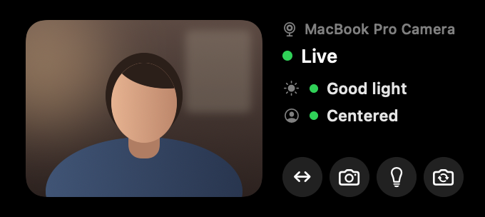
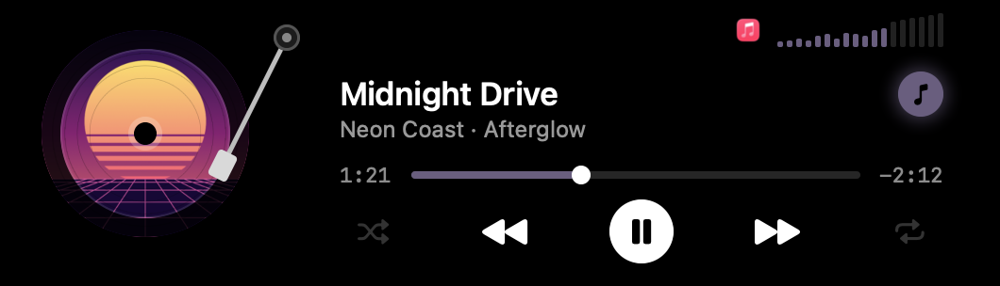
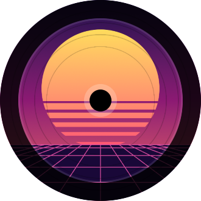
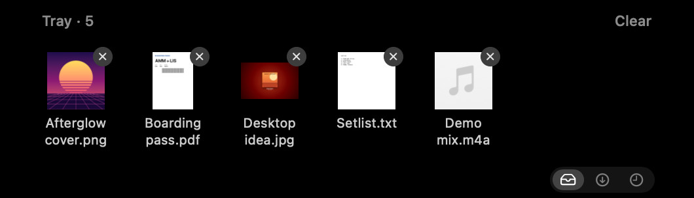
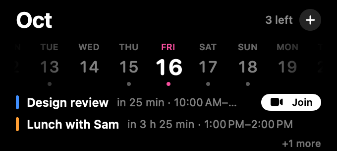
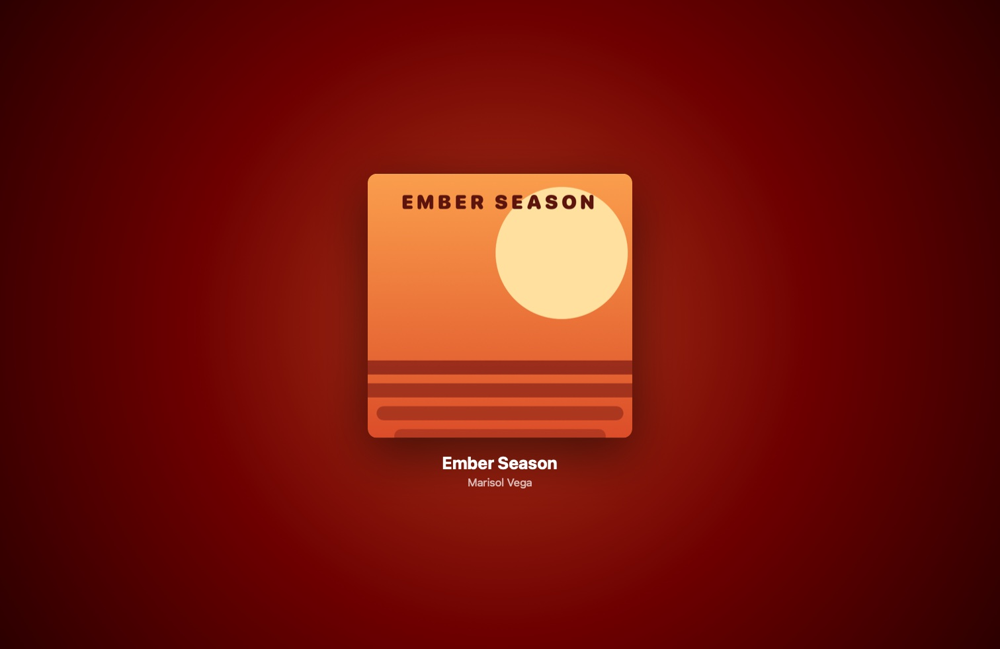
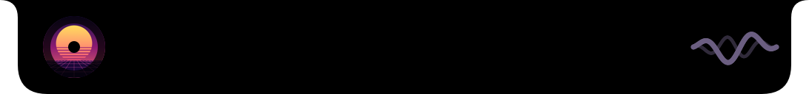
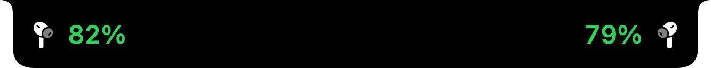

A record that keeps spinning
With the notch closed, the cover turns as a tiny record beside it and a wave drifts in the album's colour. Pause, and they fold away.





Hover the notch, then push to its left or right edge
ShawNotch turns the notch into a small stage. The song you're playing spins there as a record, files wait in a tray, a mirror checks your camera before a call, and Music Mode dresses your whole desktop in the album's colour.
Switch it on from the notch and your Mac dresses for the record. Icons, widgets and folders take a colour drawn from the album's cover, and the cover hangs over your desktop with the song's name.
Switch it off or close the player and your own colours come back. Your wallpaper itself is never changed: the poster sits on top of it.

With the notch closed, the cover turns as a tiny record beside it and a wave drifts in the album's colour. Pause, and they fold away.

Equalizer bars beside the notch show your volume and dance with the music. Drag or scroll across them to change it.
Connect your AirPods and the notch shows each earbud's battery for a moment. It warns you again at 20% and at 10%.

Push the pointer to the notch's left edge for your camera. It checks your lighting and framing, and in a dark room it can light your face from the edges of the screen. The camera is only on while the mirror is open.
Push right for today's events, with a Join button for video calls. Type "Lunch with Sara tomorrow at 1pm" and it's in your calendar.
Drop files on the notch to keep them for later, or send them with AirDrop in one move. Your newest downloads are one click away.
Measured on a 14-inch MacBook Pro with Apple silicon while playing music. Your numbers will vary.
Try every feature free for 3 days. If ShawNotch earns its place in your notch, one payment unlocks it for good.
No account and no subscription. Your music, camera and calendar never leave your Mac; ShawNotch only goes online to check your licence and look for updates.
$7.99once, plus tax where it applies
ShawNotch 1.7.5 · macOS 14 or later (Music Mode's icon colours need macOS 26 or later). Sold through Lemon Squeezy, our reseller, which handles payment and tax.
No. On a Mac without one, ShawNotch draws a small pill at the top of the screen that opens the same way.
Spotify, Apple Music and other apps that show up in macOS's Now Playing. Spotify's shuffle and repeat work from the notch too. Something playing in a browser shows in the open notch, but Music Mode and the small record leave browsers and videos alone.
Only while Music Mode is on: macOS's icon, widget and folder colour, and the icon style, which it switches to Tinted so the colour shows. It puts both back when you switch Music Mode off or quit. It never changes your wallpaper.
ShawNotch uses parts of macOS the App Store doesn't allow, such as reading what's playing in other apps. It's signed with a Developer ID and notarized by Apple, so it opens like any other app.
They're only shown in the notch. Nothing leaves your Mac, and the camera is only on while the mirror is open. macOS asks you before ShawNotch can use either.
macOS 14 Sonoma or later, on Apple silicon or Intel. Music Mode's icon colours need macOS 26; before that, it shows the album poster on your desktop.